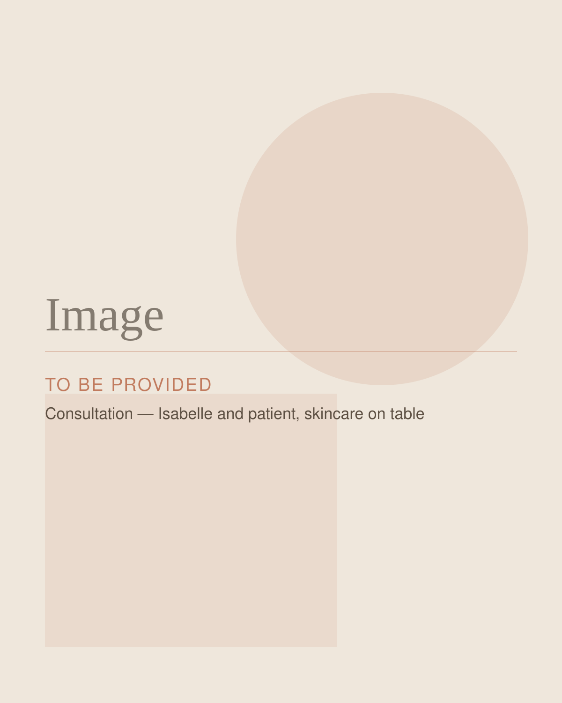

Skin Health
Personalized Skincare Consultations With Isabelle Joseph, DNP, NP-BC
Stop Guessing Which Products Belong in Your Routine.
A personalized skincare consultation gives you an opportunity to discuss your skin, current routine, concerns, and goals with Isabelle.
From acne and pigmentation to texture, dryness, and visible signs of aging, Isabelle can help you build a realistic skincare routine using products selected with your individual skin in mind.

Who It May Be For
Concerns a Consultation Can Address
You don't need to arrive knowing which product, ingredient, or treatment you need. Start with your skin.
Acne + Congestion
Clogged pores, breakouts, and lingering post-acne marks. Isabelle can help determine whether prescription skincare, changes to your home routine, a chemical peel, or another approach may be appropriate.
Pigmentation + Uneven Tone
Dark spots, post-inflammatory marks, and uneven tone. Because pigmentation can have different causes, an individualized assessment matters.
Texture, Dryness + Dullness
Rough texture, dryness, and skin that simply isn't responding to your current routine.
Visible Signs of Aging
Fine lines, loss of radiance, and changes in skin quality that a thoughtfully edited routine may help support.
What to Expect
What to Expect
- Step 1
Talk Through Your Skin
You'll discuss your skin, current routine, previous products and treatments, concerns, and goals with Isabelle.
- Step 2
Simplify + Select
Isabelle helps you identify what your skin actually needs and which medical-grade or prescription options may fit, without filling your shelf with products you don't need.
- Step 3
Build Your Routine
You'll leave with a realistic routine, and can shop recommended products through Isabelle's Skin Clique storefront. [ADDITIONAL CONSULTATION DETAILS TO BE PROVIDED]
Professional Treatments + Your Routine
What you do between treatments matters. If a chemical peel is part of your plan, Isabelle can help you prepare your skin and protect your results with the right at-home routine.
Shop Isabelle's Recommendations
Medical-grade products Isabelle recommends are available through her Skin Clique storefront.
Ready to Get Started?
Book a personalized skincare consultation with Isabelle Joseph, DNP, NP-BC.